Zaha Hadid
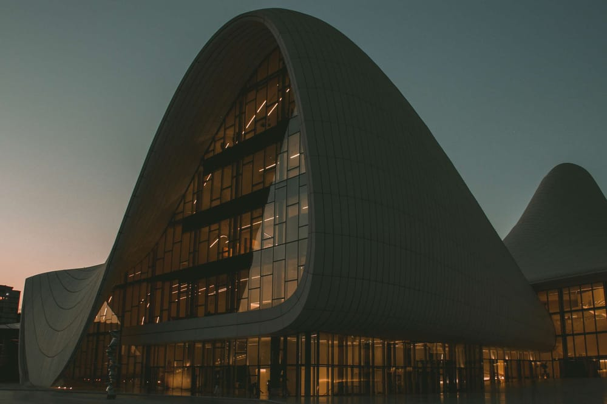Zaha Hadid (Bagdad, Iraq, 1950-Miami Beach, Estados Unidos, 2016) fue una arquitecta británica de origen iraquí, conocida por su enfoque innovador y su apuesta por nuevas tecnologías. Sus enroscadas fachadas futuristas, imponentes ángulos y siluetas imposibles convirtieron a la arquitecta británico-iraquí en una figura determinante en el mundo de la arquitectura contemporánea.
Frank Lloyd Wright
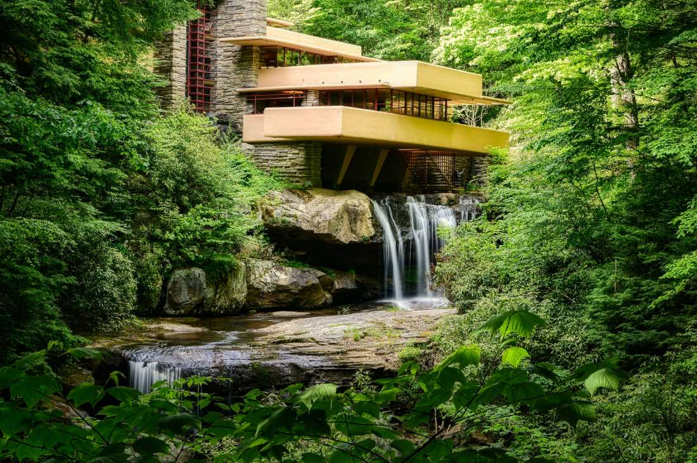Frank Lloyd Wright (Richland Center, Estados Unidos, 1867-Phoenix, Estados Unidos, 1959) es uno de los grandes nombres de la arquitectura moderna, y uno de los arquitectos estadounidenses más influyentes del siglo XX. Wright Fue es conocido por su filosofía de la arquitectura orgánica, que busca armonizar las construcciones con su entorno natural. Tanto es así que pionero del movimiento arquitectónico “Prairie School” (o Casas de la pradera), un estilo arquitectónico de líneas horizontales, techos bajos e integración con el paisaje.
Norman Foster
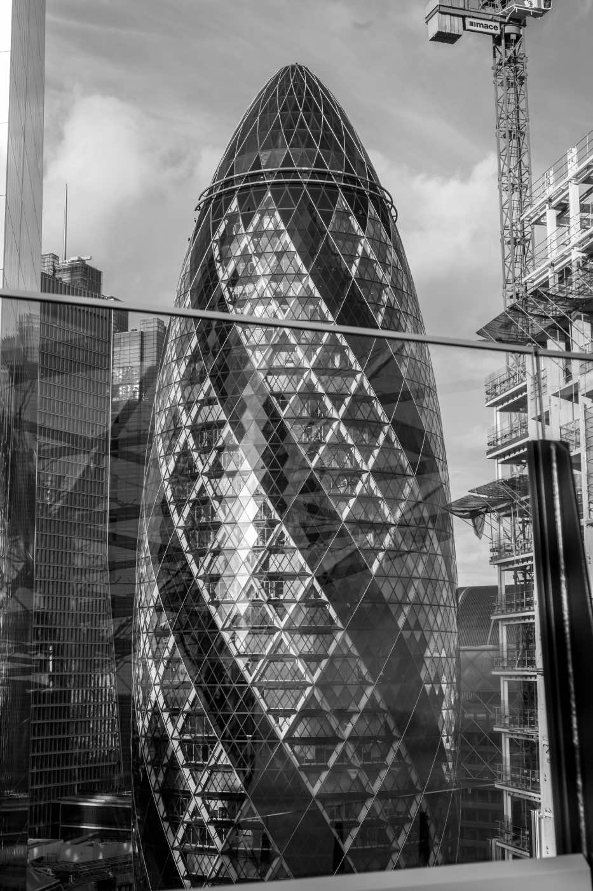Norman Foster (Reddish, Reino Unido, 1935) es un arquitecto británico y uno de los líderes del movimiento “High-tech”. Es conocido por sus diseños innovadores que integran tecnología avanzada y sostenibilidad. El famoso arquitecto es el fundador de Foster + Partners, una de las firmas de arquitectura más importantes del mundo. Entre sus proyectos más célebres se encuentran el Gherkin en Londres, el Viaducto de Millau en Francia y la renovación del Reichstag en Berlín, con una espectacular cúpula de vidrio.
Alvar Aalto
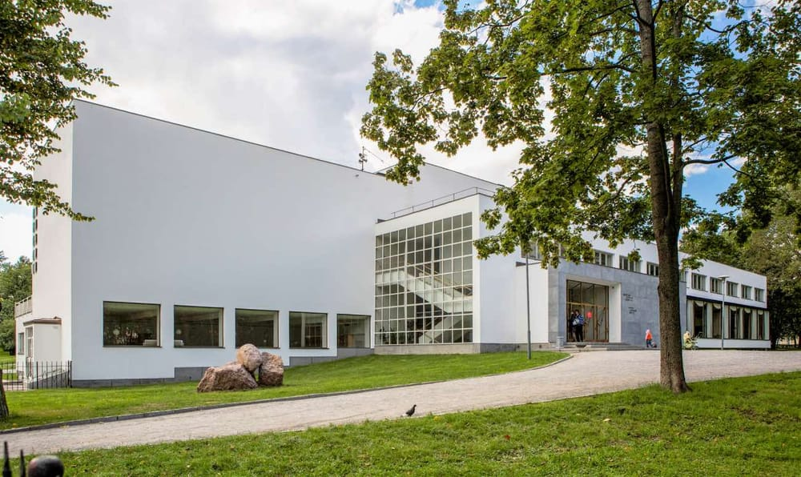Alvar Aalto (Kuortane, Finlandia, 1898-Helsinki, Finlandia, 1976) fue un arquitecto y diseñador finlandés, conocido por su enfoque humanista y funcionalista. Su trabajo abarcó una amplia gama de proyectos, desde edificios residenciales y públicos hasta mobiliario y diseño de interiores
Frank Gehry
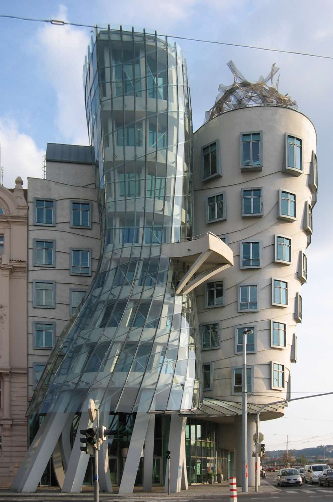Frank Gehry (Toronto, Canadá, 1929) es un famoso arquitecto canadiense-estadounidense, conocido por sus imponentes proyectos de estilo deconstructivista y entendimiento escultórico de la arquitectura. Como otros arquitectos importantes, Gehry ha revolucionado la arquitectura contemporánea con sus formas audaces y el uso innovador de materiales, resultando en algunas de las obras más reconocibles del mundo.
Mies van der Rohe
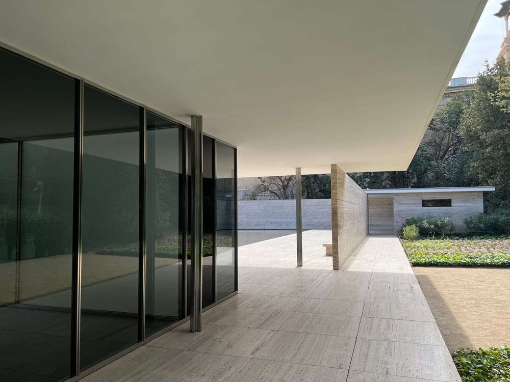Ludwig Mies van der Rohe (Aachen, Alemania, 1886-Chicago, Estados Unidos, 1969) fue un arquitecto alemán-estadounidense cuyas contribuciones ayudaron a dar forma a lo que hoy entendemos por arquitectura moderna. Su trabajo basado entorno al principio del “menos es más” le convirtió en uno de los pioneros del movimiento moderno. Y es que Mies van der Rohe buscaba la simplicidad y la claridad en el diseño arquitectónico, en una perspectiva minimalista muy rompedora.
Peter Eisenman
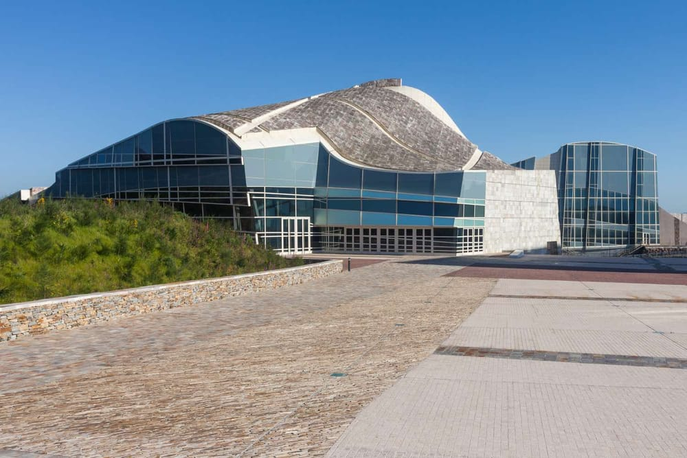Peter Eisenman (Newark, Estados Unidos, 1932) es un arquitecto estadounidense conocido por su trabajo teórico y su enfoque deconstructivista. Eisenman ha sido una figura influyente en la teoría arquitectónica contemporánea y ha diseñado numerosos edificios y proyectos urbanos.
Le Corbusier
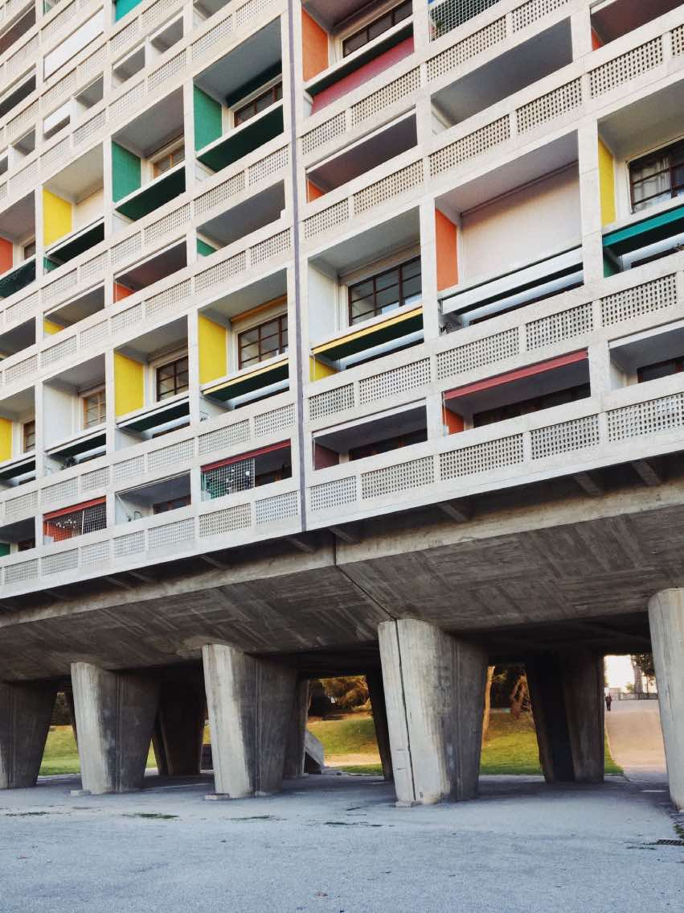Le Corbusier (La Chaux-de-Fondes, Suiza, 1887-Roquebrune-Cap-Martin, Francia, 1965) fue un arquitecto, urbanista y diseñador suizo-francés, uno de los pioneros del movimiento moderno —y, sin duda, es uno de los más famosos arquitectos del mundo—. Es conocido por sus teorías sobre el urbanismo y la vivienda, así como por su enfoque funcionalista.
Tadao Ando
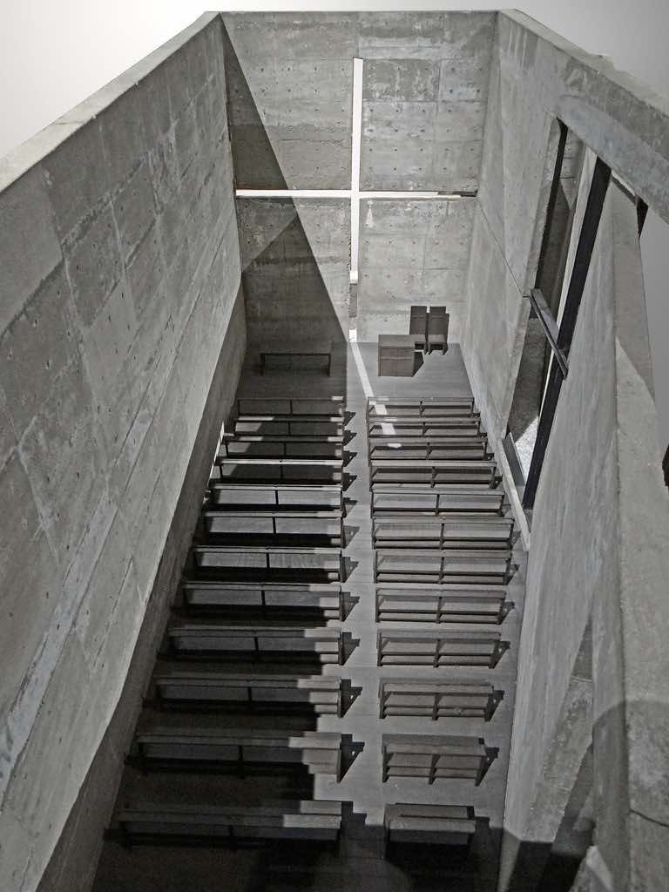El famoso arquitecto japonés Tadao Ando (Minato-ku, Osaka, Japón, 1941) se introdujo en el mundo de la arquitectura de forma diferente a la mayoría. Es autodidacta, aprendiendo a través de las obras de otros en Europa, África y América del Norte. Su trabajo es especialmente reconocido por su uso innovador del hormigón, la luz natural y la integración con el entorno.
Louis Kahn
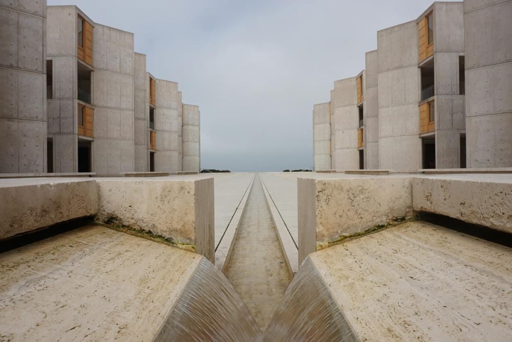Louis Kahn (Kuressaare, Estonia, 1901-Penn Station, Estados Unidos, 1974) fue un arquitecto estadounidense nacido en Estonia. Con su trabajo, desarrolló un estilo caracterizado por la monumentalidad, la experimentación con materiales como el hormigón y un enfoque introspectivo de la arquitectura. La arquitectura de Kahn está cargada de espacios trascendentales, con un especial su énfasis en la luz y la materialidad.
Ricardo Bofill
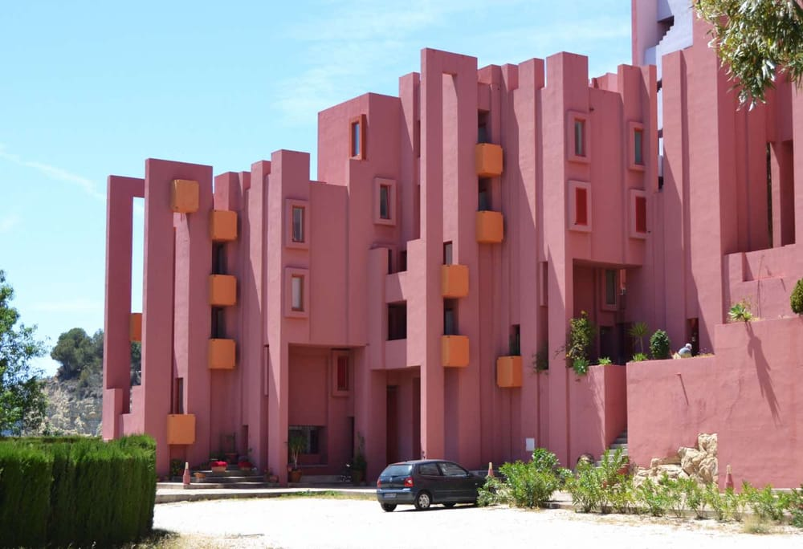Uno de los arquitectos españoles famosos más celebrados es Ricardo Bofill (Barcelona, España, 1939-Barcelona, España, 2022). Bofill es conocido por su enfoque postmodernista y la capacidad para transformar viejos edificios industriales en espacios habitables.
Philip Johnson
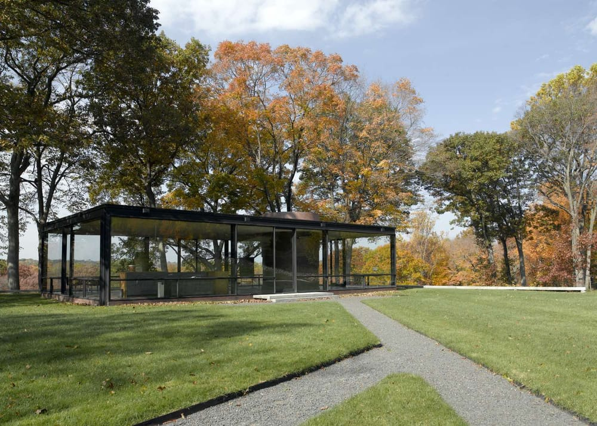Uno de los grandes arquitectos de la arquitectura moderna es Philip Johnson (Cleveland, Estados Unidos, 1906-New Canaan, Estados Unidos, 2005). Johnson fue un arquitecto estadounidense y una figura clave en la introducción del modernismo en los Estados Unidos.
David Chipperfield
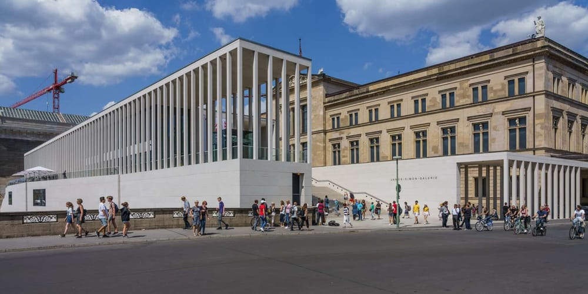Los arquitectos famosos más celebrados están presentes en muchas partes del mundo, contribuyendo a reconvertir y transformar las tramas de incontables ciudades. Y uno de los más celebrados es David Chipperfield (Londres, Reino Unido, 1953). Chipperfield es un arquitecto británico reconocido por su enfoque minimalista y su respeto por el contexto histórico, algo que le ha permitido trabajar en ciudades con una larga tradición arquitectónica.